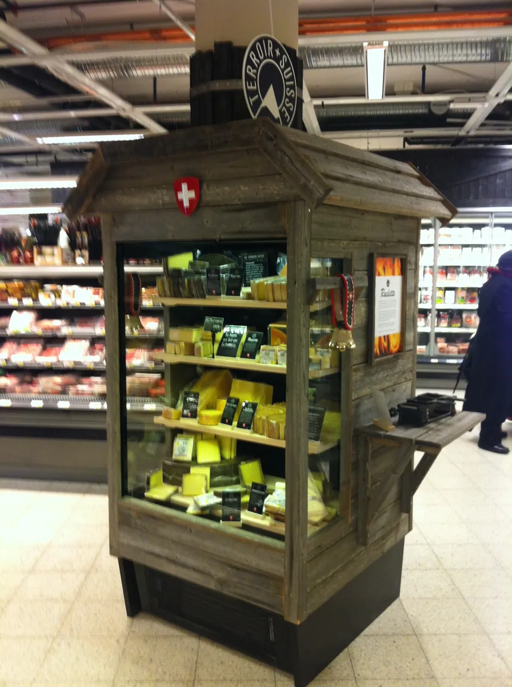
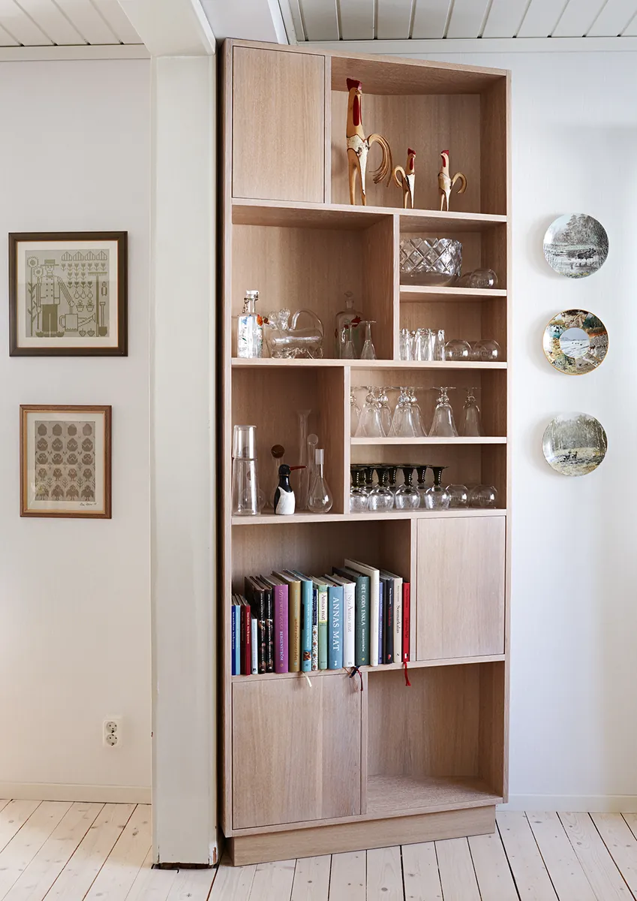
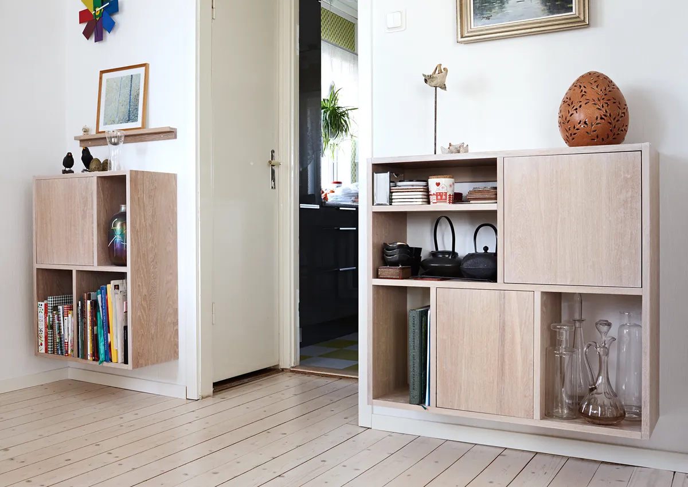
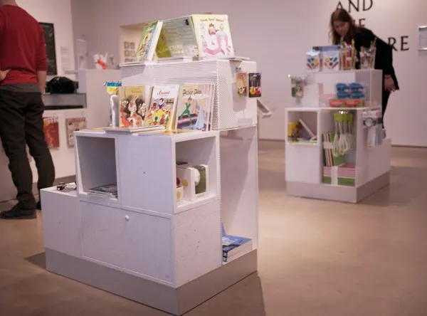
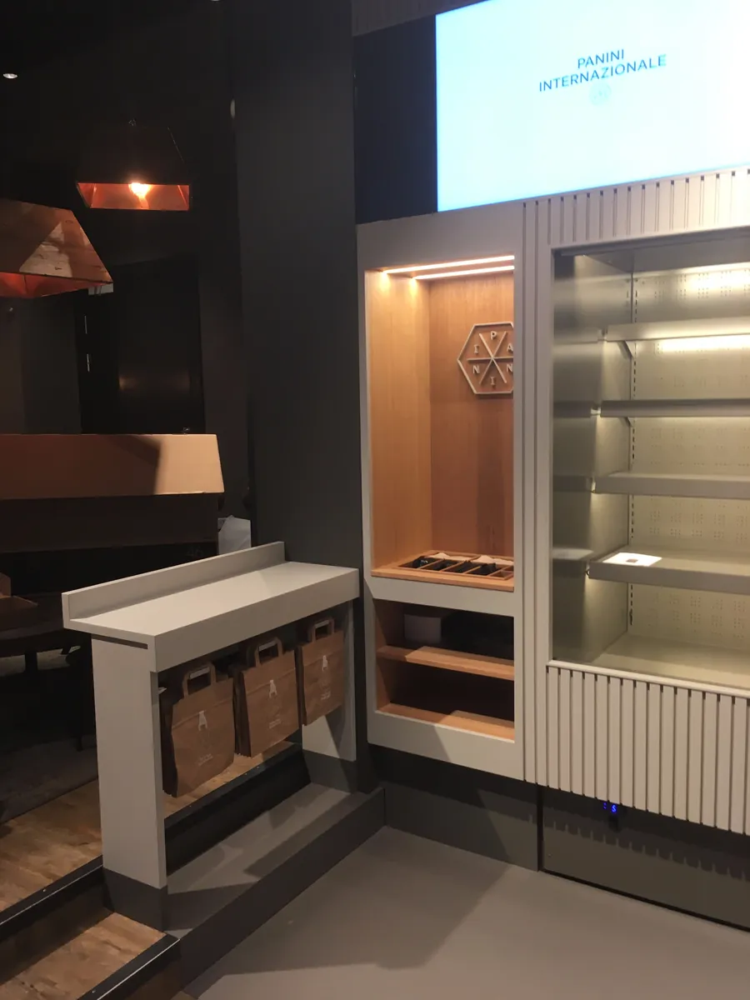
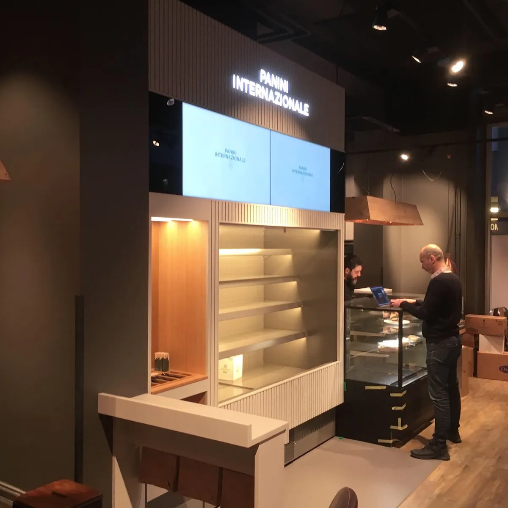
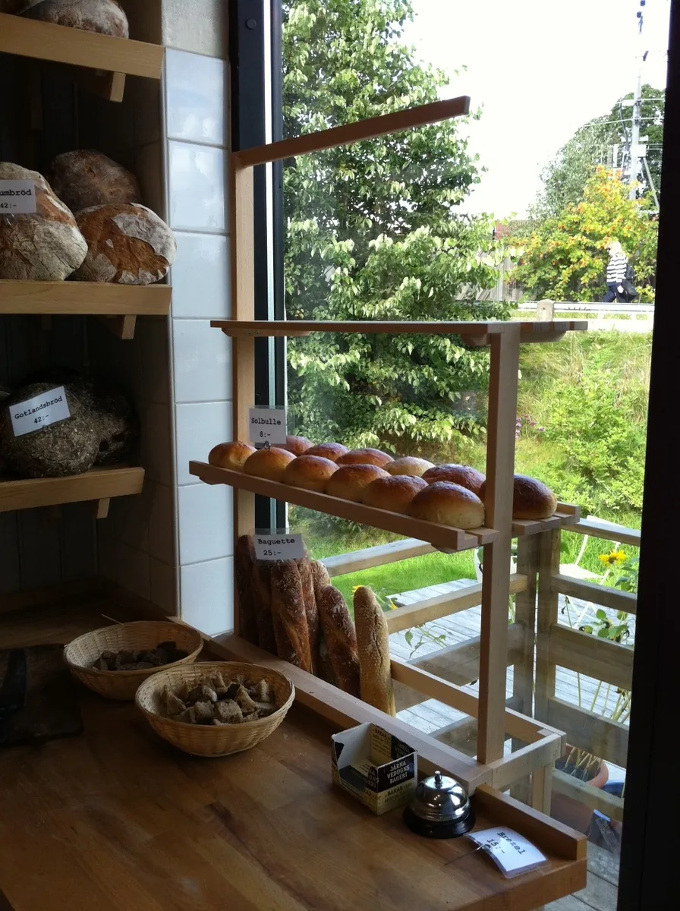
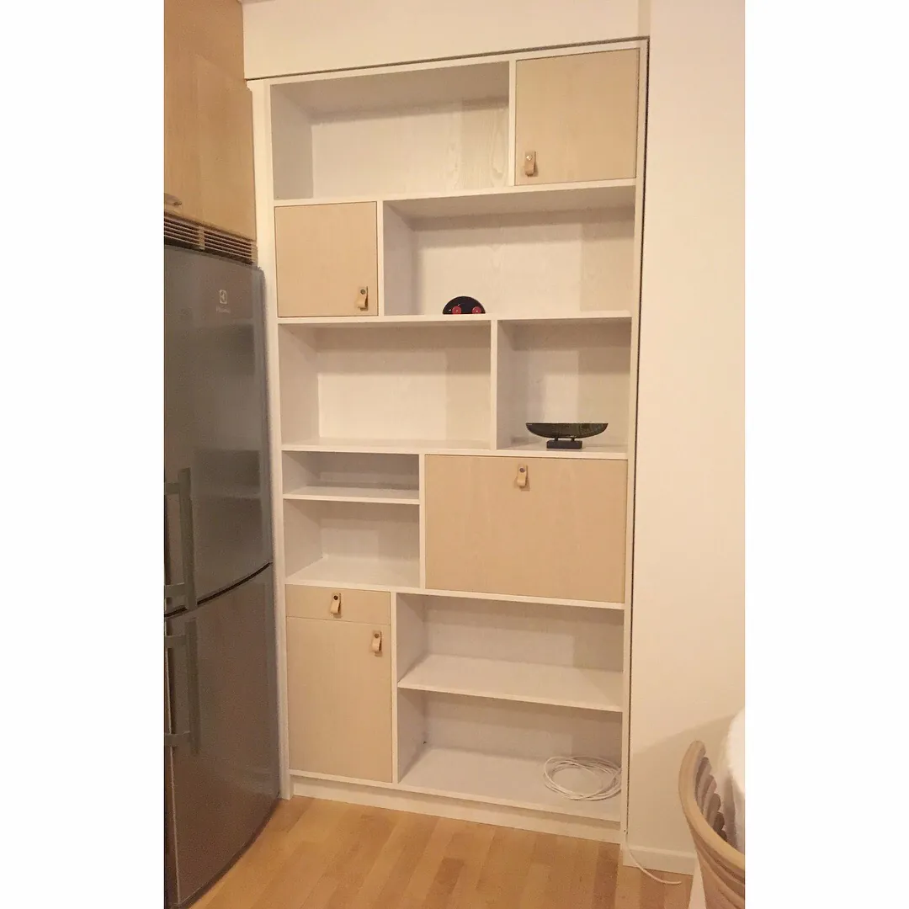
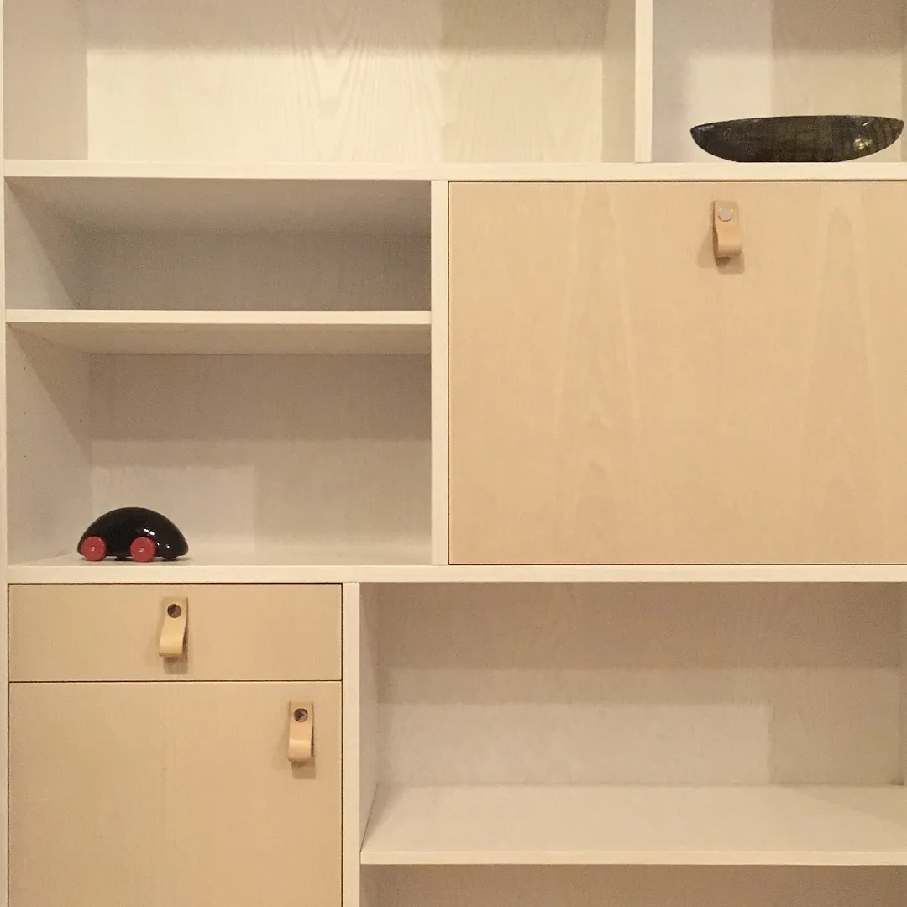
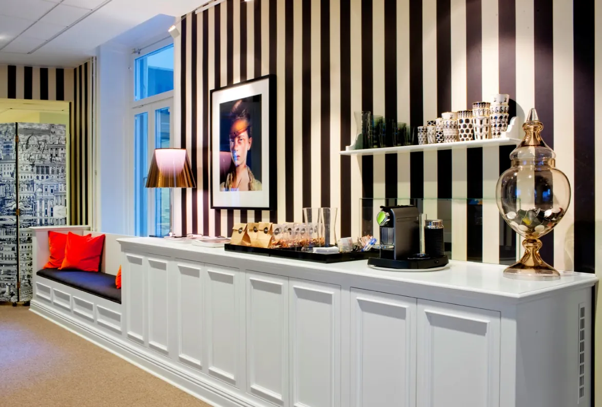

Platsbyggd inredning
För ett rum.
För ett helt hem.
Kök, garderober, bokhyllor och butiksinredningar. Allt formges efter platsen, hur den används och vem som ska leva eller arbeta där.

Drömkök på få kvadrat
Gammalsby
Ett massivt träkök som är anpassat efter husets karaktär och möter moderna krav på funktion och förvaringsmöjligheter. Det mesta i detta kök är speciallösningar anpassade efter rummets förutsättningar och mått. De enda skåpen som har standardmått är de som är anpassade efter vitvarorna. Kunden önskade många förvaringsmöjligheter för olika småprylar i sitt kök och därför har jag ritat in flera smålådor och öppna hyllor så att allt kan ha sin egen särskilda plats.
Se hela projektet
Luftigt kök för den stora familjen
Solberga
Ett kök att arbeta och leva i! Utgångspunkten för detta kök var att det skulle passa familjens vardagsliv, med allt från storkok, bullbak och läxläsning.
Se hela projektet
Modern inredning i furu
Karlevi
Platsbyggd inredning till sommarhus i Karlevi, Öland ritat av arkitekt Andrén&Fogelström. Foto: Emmi Roosling
Se hela projektetFler arbeten
Inredning i andra miljöer.


Visa bild

Visa bild

Visa bild

Visa bild

Visa bild

Visa bild

Visa bild

Visa bild

Visa bild

Visa bildEn bra början
Ska vi prata om
ditt projekt?
Berätta vad du har i tankarna. Vi hjälper dig att ta nästa steg.